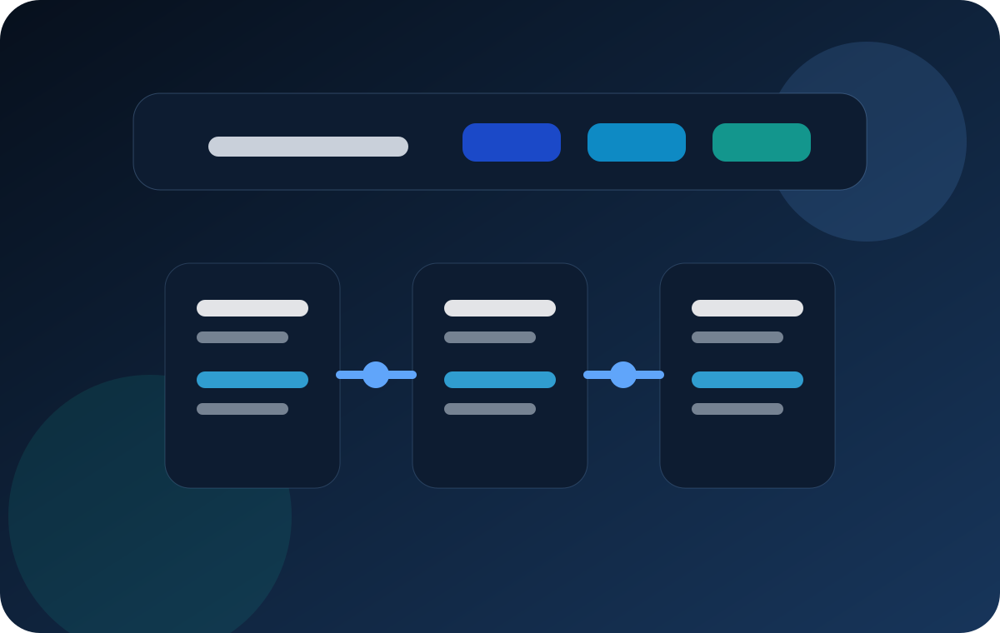

<!DOCTYPE html>
<html lang="pt-BR">
<head>
  <meta charset="UTF-8">
  <meta name="viewport" content="width=device-width, initial-scale=1.0">
  <meta name="description" content="Resumo da área de Back-end no projeto acadêmico TI Guide.">
  <title TI Guide | Back-end</title>
  <link rel="preconnect" href="https://fonts.googleapis.com">
  <link rel="preconnect" href="https://fonts.gstatic.com" crossorigin>
  <link href="https://fonts.googleapis.com/css2?family=Inter:wght@400;500;600;700;800&family=Poppins:wght@500;600;700&display=swap" rel="stylesheet">
  <script>document.documentElement.classList.add('js');</script>
  <link rel="stylesheet" href="css/main.css">
  <link rel="stylesheet" href="css/pages.css">
</head>
<body class="page-shell">
  <header class="site-header">
    <div class="site-header__inner">
      <div class="site-header__top" data-reveal>
        <a class="brand" href="index.html" aria-label="Página inicial do projeto TI Guide">
          <span class="brand__mark">TS</span>
          <span class="brand__text">
            <strong TI Guide>
            <span>Painel acadêmico sobre áreas da Tecnologia da Informação.</span>
          </span>
        </a>
        <div class="site-header__summary">
          <span class="site-header__eyebrow">Navegação em cards</span>
          <p>Use os cards para comparar áreas sem perder o contexto do projeto enquanto navega pelas páginas internas.</p>
        </div>
      </div>

      <nav aria-label="Menu principal">
        <ul class="nav-list" data-stagger>
          <li data-reveal><a class="nav-card" href="index.html"><span class="nav-card__icon" aria-hidden="true">HM</span><span class="nav-card__content"><strong>Home</strong><span>Visão geral, comparativos e acesso rápido ao projeto.</span></span></a></li>
          <li data-reveal><a class="nav-card" href="frontend.html"><span class="nav-card__icon" aria-hidden="true">FE</span><span class="nav-card__content"><strong>Front-end</strong><span>Interface, componentes e responsividade.</span></span></a></li>
          <li data-reveal><a class="nav-card active" href="backend.html" aria-current="page"><span class="nav-card__icon" aria-hidden="true">BE</span><span class="nav-card__content"><strong>Back-end</strong><span>Lógica, APIs e regras do sistema.</span></span></a></li>
          <li data-reveal><a class="nav-card" href="dados.html"><span class="nav-card__icon" aria-hidden="true">DB</span><span class="nav-card__content"><strong>Dados</strong><span>Métricas, análise e inteligência de negócio.</span></span></a></li>
          <li data-reveal><a class="nav-card" href="infraestrutura.html"><span class="nav-card__icon" aria-hidden="true">OPS</span><span class="nav-card__content"><strong>Infraestrutura</strong><span>Redes, cloud e disponibilidade da operação.</span></span></a></li>
          <li data-reveal><a class="nav-card" href="seguranca.html"><span class="nav-card__icon" aria-hidden="true">SEC</span><span class="nav-card__content"><strong>Segurança</strong><span>Proteção, risco e monitoramento contínuo.</span></span></a></li>
          <li data-reveal><a class="nav-card" href="mobile.html"><span class="nav-card__icon" aria-hidden="true">APP</span><span class="nav-card__content"><strong>Mobile</strong><span>Apps, contexto de uso e performance.</span></span></a></li>
          <li data-reveal><a class="nav-card" href="uxui.html"><span class="nav-card__icon" aria-hidden="true">UX</span><span class="nav-card__content"><strong>UX/UI</strong><span>Pesquisa, fluxo e direção visual.</span></span></a></li>
        </ul>
      </nav>
    </div>
  </header>

  <main>
    <section class="page-hero">
      <div class="container">
        <div class="page-hero__panel panel">
          <div class="page-hero__layout" data-stagger>
            <div class="page-hero__content" data-reveal>
              <span class="section-badge">Back-end</span>
              <h1 class="section-title">A inteligência estrutural que sustenta regras, integrações e dados.</h1>
              <p class="section-description">
                Back-end concentra o processamento por trás das interfaces. É onde vivem regras de negócio, autenticação,
                persistência, integração com serviços e lógica que garante consistência, escalabilidade e segurança para aplicações digitais.
              </p>
              <ul>
                <li>Criação de APIs e serviços que conectam sistemas, dados e usuários.</li>
                <li>Modelagem de dados, validações e controle de fluxos críticos.</li>
                <li>Base para escalabilidade, manutenção e confiabilidade do produto.</li>
              </ul>
            </div>
            <figure class="page-hero__media" data-reveal>
              
            </figure>
          </div>
        </div>
      </div>
    </section>

    <section class="page-section">
      <div class="container">
        <div class="page-section__grid" data-stagger>
          <article class="info-card panel" data-reveal><h2>Responsabilidades centrais</h2><p>Processar requisições, aplicar regras do negócio e entregar respostas seguras e eficientes para outras camadas.</p></article>
          <article class="info-card panel" data-reveal><h2>Tecnologias comuns</h2><p>Node.js, Java, Python, bancos relacionais e NoSQL, autenticação e serviços em nuvem.</p></article>
          <article class="info-card panel" data-reveal><h2>Valor estratégico</h2><p>Permite crescimento sustentável do sistema e garante que as operações funcionem com consistência.</p></article>
        </div>
      </div>
    </section>

    <section class="roadmap">
      <div class="container">
        <div class="roadmap__panel panel" data-reveal>
          <div class="roadmap__header">
            <div>
              <span class="section-badge">Arquitetura</span>
              <h2>Fluxo de maturidade da camada de serviços</h2>
            </div>
            <p>Projetos sólidos de back-end deixam claro como dados entram, são validados, processados e retornam de forma confiável para toda a plataforma.</p>
          </div>
          <div class="timeline" data-stagger>
            <article data-reveal><span>Camada 01</span><h3>Entrada de dados</h3><p>Recebimento de requisições com validação e organização de rotas, recursos e permissões.</p></article>
            <article data-reveal><span>Camada 02</span><h3>Processamento</h3><p>Execução das regras de negócio, integrações e decisões que sustentam o comportamento da aplicação.</p></article>
            <article data-reveal><span>Camada 03</span><h3>Persistência e escala</h3><p>Armazenamento, monitoramento e ajustes estruturais para suportar crescimento com estabilidade.</p></article>
          </div>
        </div>
      </div>
    </section>
  </main>

  <!-- Rodapé simples !-->
  <footer class="site-footer">
    <div class="site-footer__inner">
      <div class="site-footer__grid" data-reveal>
        <div><h2>Projeto</h2><p TI Guide | Panorama acadêmico sobre áreas da Tecnologia da Informação com foco em UX/UI e organização visual.</p></div>
        <div><h2>Equipe</h2><p>Davi Steil e grupo da faculdade, refinando conteúdo e interface em conjunto.</p></div>
        <div><h2>Ano</h2><p>2026</p></div>
      </div>
    </div>
  </footer>

  <script src="js/main.js" defer></script>
</body>
</html>
